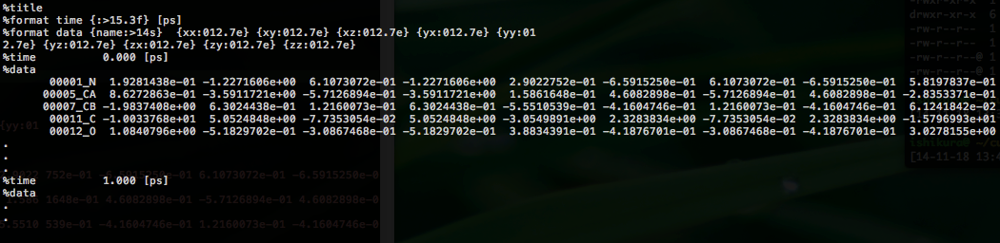

4.2. Atomic stress tensor analysis¶
CURP performs atomistic stress tensor analysis. According to Hardy’s forluma, the Cauchy stress tensor of the ith atom is given by:

where \(\Omega_i\) is the volume of atom \(i\), \(\boldsymbol{F}_{ij}\) is the pairwise interatomic force acting on \(i\) from \(j\), \(\boldsymbol{r}_{ij}\) is the relative displacement vector from atom \(j\) to atom \(i\), \(m_i\) is the mass of atom \(i\), and \(\boldsymbol{v}_i\) is the velocity vector of atom \(i\).
As can be seen from the above formula, the atomic stress tensor of atom \(i\) depends on both the position and the velocity trajectories during the MD simulations.
The calculation procedure consists of the following steps:
4.2.1. Obtaining the MD trajectory¶
We show two examples of calculations for ALA-ALA-ALA in vacuum/solvent. NVT MD simulations were performed using the Amber12 program with the time step of 0.5 fs at room temperature. In addition to the trajectory files, a parameter topology file is required for each system.
4.2.2. Stress tensor calculation¶
Examples for the alanine tripeptide in the vacuum and solvent environments are found in the directories ala3invac-stress and ala3insol-stress, respectively. Each directory contains three subdirectories named (1) united, (2) residue and (3) whole.
In practice, it is possible to calculate atomic stress tensors for all atoms including the hydrogen atoms, and CURP considiers all atoms in the calculations. However, the all-atom representation is often inconvenient for the stress tensor analysis because the values of the atomic volume obtained by the Voronoi tessellation are sometimes quite small for the hydrogen atoms, leading to large and significant fluctuations. To overcome this issue, a united-atom approach has been employed.
,where \(J\) represents a group of atoms. Here, each unit of the atom group could be either (1) united atom (heavy atom together with the attached hydrogen) or (2) amino acid residue, or (3) the whole molecule.
Running the program¶
First, change the directory to the working directory for the stress tensor analysis.
$ cd $CURP_HOME/tutorial/ala3invac-stress/united
To start the calculations, type the following command:
$ $CURP_HOME/bin/curp < run.cfg > log
where run.cfg (see below for details) is the configuration file for the analysis. An alternative way is to run the following script:
$ ./run.sh
The calculations will be completed shortly and the prompt will appear at the shell. The results are stored in the files in two forms: (1) stress_atm_dat00000: individual stress tensors for every atom, (2) stress_grp_dat00000: averaged stress tensors for each group, where a group can be either united atom, residue, or the whole molecule.
Note
The following lines appear at the bottom of the log file. Detailed timing in calculator object, Detailed timing for parallel prossing, The summary of the elapsed times The timging information is currently incorrect. Please ignore these lines for now.
Setting run.cfg¶
An example of run.cfg is shown below.
[input]
format = amber
first_last_interval = 1 200 1
# group_file = group.ndx
[input_amber]
target = trajectory
topology_file = ../system.prmtop
coordinate_format = ascii
coordinate_file = ../sam.mdcrd.gz
velocity_format = ascii
velocity_file = ../sam.mdvel.gz
[volume]
method = voronoi
output_volume_file = outdata/volumes.dat
output_gvolume_file = outdata/gvolumes.dat
voronoi_cutoff = 6.0
voronoi_no_hydrogen = yes
voronoi_solvation = RANDOM20
voronoi_probe_length = 2.8
# voronoi_output_solvation_file = outdata/solvated.pdb
[curp]
potential = amber99
method = momentum-current
group_method = united
decomp_group_current = no
target_atoms = 1-33
remove_trans = yes
remove_rotate = yes
log_frequency = 10
[output]
filename = outdata/stress.dat
decomp = yes
frequency = 10000
[input]¶
In this section, we specify the input file format.
- format = amber
- CURP reads the input files in the Amber format.
- first_last_interval = 1 200 1
- Three numbers, <first>, <last>, and <interval> are given in this order, to specify that CURP will read the MD frames from the <first> to the <last> position at intervals of <interval> frames.
- group_file = group.ndx
- Specifies the name of the ‘group definition file’. Each group is defined as a list of atoms. A group could be either a residue or an arbitrary set of atoms.
[input_amber]¶
This section name depends on the format keyword specified in the [input] section. The name of this section is [input_amber] because the format keyword in the [input] section is “amber”.
For the [input_amber] section, the following parameters must be specified.
- target = trajectory | restart
- If trajectory is specified, CURP assumes that the input files are trajectory files.
- topology_file = ../system.prmtop
- Parameter and topology file.
- coordinate_format = ascii | netcdf
- Format of the trajectory files.
- coordinate_file = <mdcrd_file>
- The name of the coordinates trajectory file.
- velocity_format = ascii | netcdf
- Format of the velocity trajectory files.
- velocity_file = <mdvel_file>
- The name of the velocity trajectory file.
[curp]¶
In this section, we set the parameters for the calculations of pairwise interatomic forces.
- potential = amberbase | amber94 | amber96 | amber99 | amber99SB | amber03 | amber12SB
- Type of force-field functions.
- method = momentum-current | energy-flux
- momentum-current: Atomic stress tensors analysis. energy-flux: Interatomic energy flow analysis.
- group_method = none | united | residue | file
- Unit of atom groups. none: No groups are defined. united: Each heavy atom, either polar or nonpolar, represents a united atom “group” and all hydrogen atoms attached to the heavy atom belong to the “group”. residue: Groups are defined by residues unit. file: Groups are defined by the file specified by the group_file keyword in the input section.
- target_atoms = 1-33
- The target region for the analysis. In this case, atomic stress tensors are calculated for the 1st to the 33rd atoms.
- remove_trans = yes | no
- Translational motions are removed from the trajectory, if this keyword is set to “yes” (strongly recommended).
- remove_rotate = yes | no
- Rotational motions are removed form the trajectory, if this keyword is set to “yes” (strongly recommended).
- log_frequency = 10
- Print results to stdout every log_frequency steps.
[volume]¶
For the atomic stress tensor analysis, CURP performs Voronoi tessellation to calculate the atomic volumes.
- method = voronoi | none | vdw | outer
- voronoi: Atomic volume calculations are performed by Voronoi tesselation. See Specification of curp setting file in the reference section for other values. We coded a Fortran90 program for the atomic volume calculation based on Voronoi tesselation algorithm found in the literature (“Computer Simulation of Liquids”, M.P. Allen and D.J. Tildesley eds., Oxford Univ. Press (1987)).
- output_volume_file = <file_path>
- The path to the output file for the atomic volumes.
- output_gvolume_file = <file_path>
- The path to the output file for the group volumes.
- voronoi_cutoff = 6.0
- The cutoff length for the neighbor candidate search in voronoi tessellation.
- voronoi_no_hydrogen = yes | no
- Treatment of the hydrogen atoms in Voronoi tessellation. If this option is “yes”, then the hydrogen atoms are neglected for the Voronoi tessellation and the evaluation of the group stress tensors, even when a hydrogen atom is included in the target for the calculation in the [curp] section. Within the program, in this case, the atomic volume of a hydrogen atom is set to be 8.0 Å 3 to avoid division by zero for convenience.
- voronoi_solvation = RANDOM20 | none
For atoms exposed on the surface of a target protein molecule in vacuum, it is not possible to define the Volonoi polyhedron.
RANDOM20: To avoid this problem, the protein molecule is placed in a hydration sphere (radius = 20 Å) of randomly generated non-overlapping water molecules. If your target system is so large that the hydration sphere is not able to cover the system, plase use the none option and solvate the system with a sufficiently large number of hydration layers. (see below)
none: This keyword is specified when CURP performes the stress tensor analysis for the system including explicit solvent layers.
- voronoi_probe_length = 2.8
- The probe length [Å] of the solvation for the Voronoi method. If voronoi_solvation is set, CURP removes water molecules within <voronoi_prove_length> [Å] from all atom of the system.
[output]¶
Output format specification.
- filename = outdata/stress.dat
Specify the naming convention of the datafile for the stress tensor analysis. In this example, the file name is outdata/stress_grp.dat00001, outdata/stress_grp.dat00002 , ... and so on.
Please note that the datafile is generated for each force component if decomp = yes. (see below)
- frequency = 10000
- The number of frames output to a single datafile. It is highly recommended to estimate the file size of a single datafile in advance.
- decomp = no | yes
- If “yes”, stress tensors are separated into different components.
Setting group.ndx¶
As mentioned above, the user can define any group of atoms for the stress tensor analysis. When the group_method keyword is set to be file in the [curp] section, and group_file name is specified in the [input] section, user defined grouping is applied.
In the following example, stress tensor analysis is performed separately for the main chain parts and for the side chain parts.
[01_ALA_M]
1-6 11-12
[01_ALA_S]
7-10
[02_ALA_M]
13-16 21-22
[02_ALA_S]
17-20
[03_ALA_M]
23-26 31-33
[03_ALA_S]
27-30
Here, each group name is surrounded by [ and ]. Then the list of the individual atoms is given in which each atom is separated by a space, tab or a blank line. Alternatively, a range of atoms can be indicated by using -.
Output files¶
stress tensor data file¶
For each snapshot of the MD trajectory, 3x3 stress tensors are output to outdata/stress_grp.dat00000. An example is shown below:
Comment lines begin with %. For each time frame, nine elements (xx, xy, xz, yx, yy, yz, zx, zy, zz) are printed for each group.
voluemes.dat, gvoluems.dat¶
Atomic volumes and group volumes are printed to the files specified by the output_volume_file and output_gvolume_file keywards in the [volume] section. If no file names are specified, no data is printed.
4.2.3. Analysis of stress tensor¶
The direct output of the stress tensor analysis itself is inconvenient for two reasons: (1) the output file contains a large amount of data of the time-series of the MD trajectory and (2) the stress tensor has 3x3=9 components.
To simplify the analysis, we show how to diagonalize and time average the stress tensor as follows:
Time-averaging:
Diagonalization:
Root-mean-square amplitude of the diagonal components:
The last quantity is used to measure the magnitude of the stress tensor.
These calculations are performed by the ana.sh script.
$ ./ana.sh
ana.sh uses $CURP_HOME/script/simplify_tensor.py, which is executed as an argument to $CURP_HOME/bin/ana-curp:
$ $CURP_HOME/bin/ana-curp simplify_tensor.py
Result¶
Finally, a detailed summary of the calculated data is output to grp-sim.dat.

Examination of these results reveals the following characteristic features:
- The improper and torsion componets show relatively large values.
- Main chain carbonyl carbons show particularly large values for two reasons: (1) They are involved in the two improper torsions, C-O-Cα-N and N-H-C-Cα. (2) Their atomic volume is small because of the tight packing by the nearby atoms.